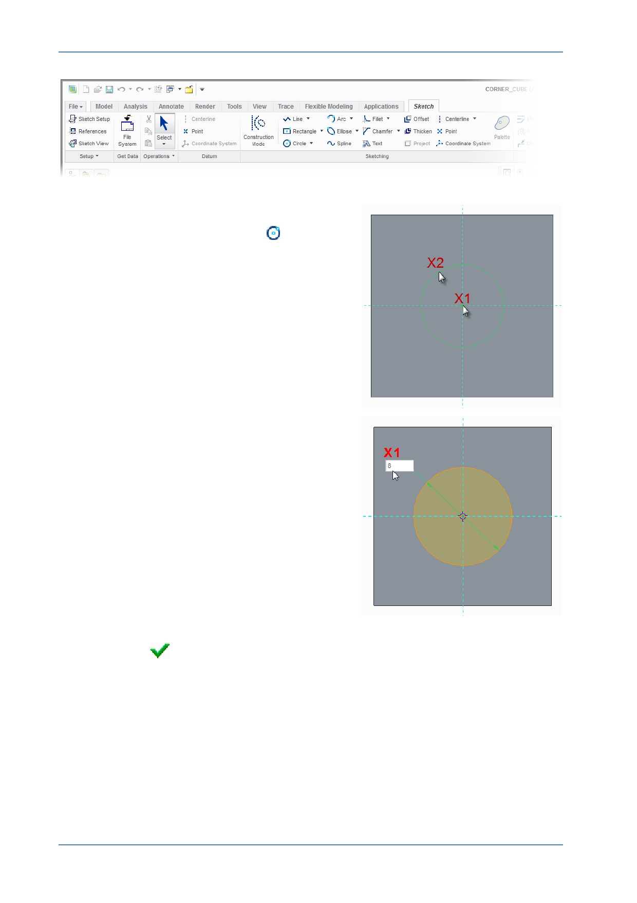

PTC Academic Program
4. Sketching a circle:
Click Center and Point circle
from the
Sketching group of the Sketch tab.
Move the cursor until it snaps to the
intersection of the reference lines X1 , and
click to locate the center of the circle.
Move the cursor away from the center and
click at X2 to complete the circle.
Middle-click in the graphics area to deselect
the circle tool.
Double-click the diameter dimension value
X1 , then type 8 and press ENTER .
Click in a blank area of the graphics window
to deselect the dimension.
The circle will resize and the dimension will
change color to show it is now strong .
5. Reorient the model to its default orientation:
Press CTRL + D to reorient the model.
Click OK
from the Close group of the Sketch tab to complete the sketch and
return to the Extrude dashboard.
© 2012 PTC
Creo Parametric 2.0 Primer
Page 26